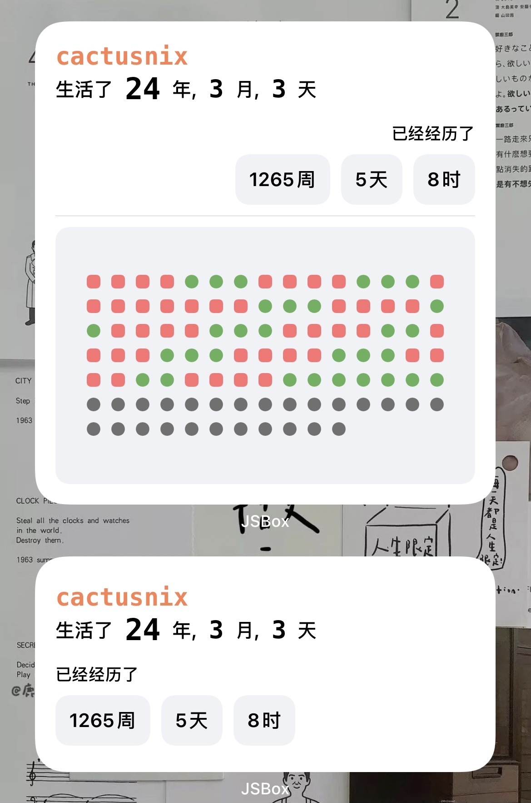
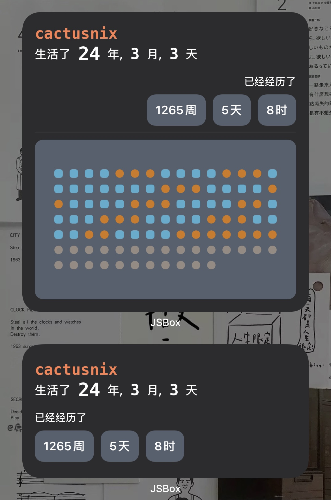
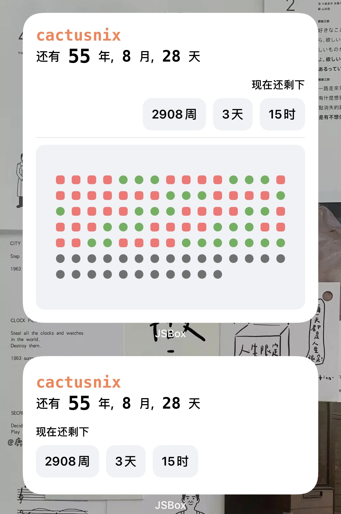

介绍
此小组件基于 iOS 上的 JSBox 编程软件开发，JSBox 使用小组件功能需要订阅，具体订阅方式可以自行查看。
-
支持 2*2、2*4、4*4 三种大小布局。
-
支持中英文语言切换，需要更改 iOS 系统语言。
-
有两种数据运行模式，第一种是累计模式用于展示某个日期出生的人到今天生活了多久，以年、月、日的形式展示，此处年、月、日是更符合人直觉的时间差值，比如 2019-01-01 13:00:00 距离 2020-12-04 16:23:00 的正确的差值应该是 1 年 11 月 3 天 3 时 23 分，而不是那种默认 365 天一年、30 天一个月计算出来的，同时会展示到今天共计生活了多少周、多少天、多少时。第二种倒计时模式用于展示距离死亡时间还有多少时间，同样以年、月、日的形式展示，也有周、天、时。但有一点遗憾，小组件的刷新机制加上我的能力有限没能实现按秒刷新的机制（iOS14 小组件是没办法按秒刷新的，但是可以通过其他方式）。
-
三种组件布局，小组件就是最基本年、月、日的数据，中组件增加了周、天、日的数据，大组件再增加一年的日历块，方块表示周，圆形表示天，一般来说过去的日历块为深色，未来的日历块为浅色块，具体可以运行查看。
用法
- 安装JSBox
- 下载AgeWidget 小组件脚本
- 桌面添加小组件选择 JSBox
- 编辑小组件选择 AgeWidget 脚本，选取配置正确的 JSON 入参
- 参数说明:
{
"name": "cactusnix",
"birthDate": "1996/8/1 9:0:0",
"dateType": 1,
"deathDate": "2120/8/1 9:0:0"
}
- name: 必填/string eg: "cactusnix"
- birthDate: 必填/正确/string eg: "1996/8/1 9:0:0"
- dateType: 可选/默认值 0/number, 0 表示累计模式, 1 表示倒计时模式
- deathDate: 可选/默认 80 岁/string, 和 birthday 一样的格式
运行截图
  